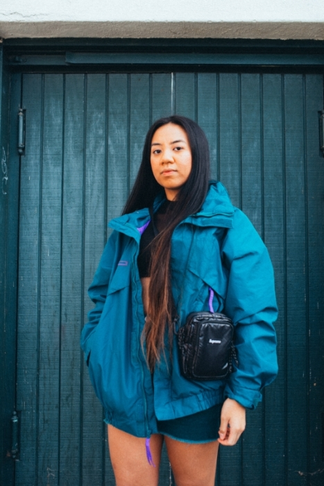

About
Filipina based photographer in LA/OC.
I've been at this photography grind for years. Expression is fundamental to create connections with people, and through photography is the best way I can genuinely convey my thoughts.
My parents gave me my first camera in highschool and since then, I've continued the pursuit of creativity. As a current college student, I am a part of UCI Esports media team and am an overall freelancer.
Let's keep pursuing and creating.
- Oshin T.

Social Media